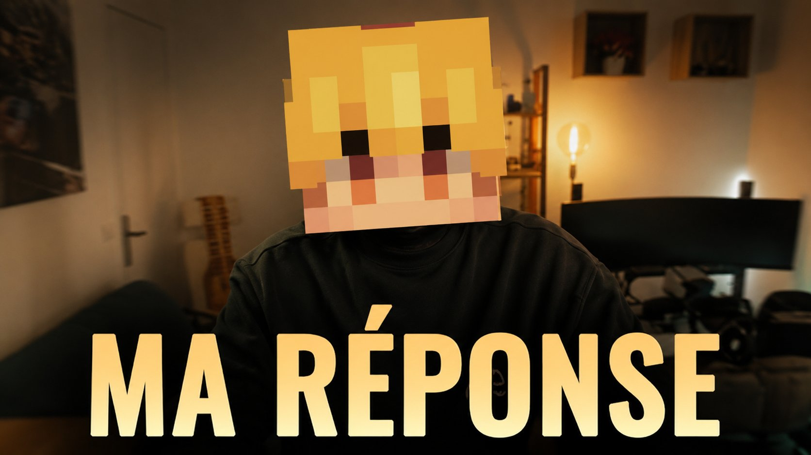

🎰 Commerce
Le casino ouvre ses portes
Frissons, divertissement et fortune à portée de main — le casino ouvre enfin, une bouffée d'air frais pour le territoire.
Lire →
🚨 Crise politiqueUne vidéo de propagande, un défi lancé à notre rédaction, et un discours solennel des Belazur. Le Karmine Déchaîné vous livre l'analyse complète — et sa réponse.
Frissons, divertissement et fortune à portée de main — le casino ouvre enfin, une bouffée d'air frais pour le territoire.
Lire →Rang S pour Leonhart, flèches enflammées, Mme Boo élue, réforme des taxes à 10% et immunité diplomatique invoquée.
Lire →Depuis le sommet de la tour du fisc, des citoyens ont brandi leurs drapeaux face au ciel — un acte de résistance douce et déterminée.
Lire →Le Karmine Déchaîné est un journal indépendant, sans publicité imposée, sans actionnaire. Si vous souhaitez soutenir notre travail de façon anonyme, vous pouvez effectuer un virement directement sur notre compte.
Le don est entièrement anonyme. Merci de votre soutien.